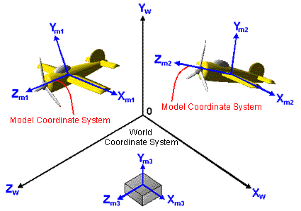

The world coordinate system is like the coordinate system of a photo studio where all the objects are placed together to prepare for a photograph to be taken of the model. In the world coordinate system each three-dimensional object is in a defined location as shown in this illustration:

The view (camera) and the light source are also located in the world coordinate system.
The world coordinate system needs a very wide range depending on the world you want to render. For example, in the case of a racing game, you might define 1 meter as 1.0 and render up to 1 kilometer (1,000 meters). In the case of a fighting game, you might define one edge of the world coordinate system to be only 10 meters.
Calculations are necessary when you place each object using a model coordinate system into the world coordinate system. For example, say you define 1 meter as 1.0 for your world coordinate system. When you place the previously illustrated airplane (which was defined with 1 meter as 0.1) into your world coordinate system, you need to reduce the size of the model data to 1/10th its previous size. And when you place the human head which was defined with 1 centimeter as 0.05, into the same world coordinate system, you must reduce its size to 1/500th of its previous size.
The world coordinate system's coordinates are expressed as (xw,yw,zw).
Nintendo® Confidential
Copyright © 1999
Nintendo of America Inc. All Rights Reserved
Nintendo and N64 are registered trademarks of Nintendo
Last Updated March, 1999